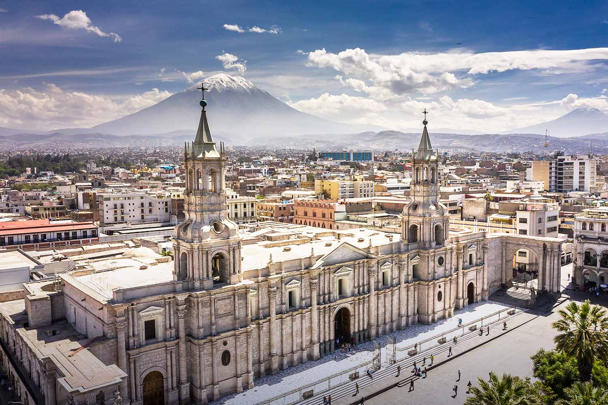

Bienvenidos a la ciudad blanca
Arequipa, conocida como la "Ciudad Blanca", es una de las ciudades más hermosas del Perú, destacando por su arquitectura colonial, su impresionante paisaje volcánico y su exquisita gastronomía.
En este portal podrás descubrir los lugares más turísticos, disfrutar de contenido multimedia y reservar tours.
